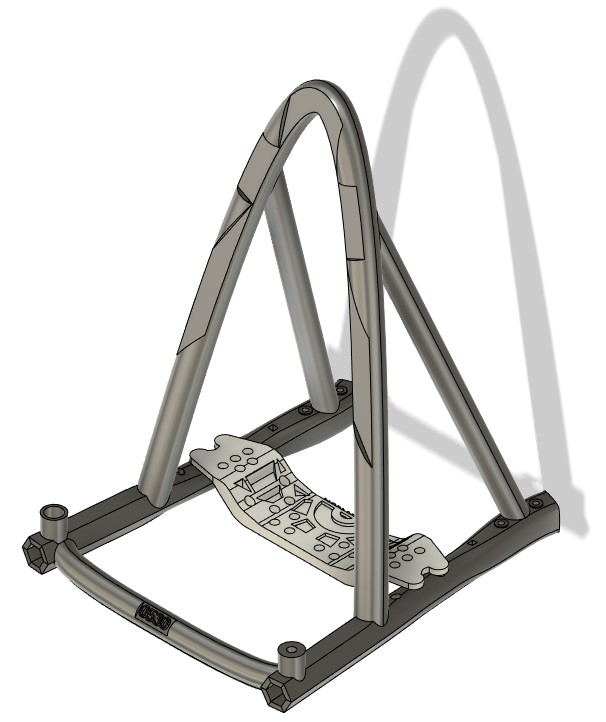

Retirement Gift

In order to show appreciation to a Tech Lead at FCA who was retiring, a co-worker decided to create a retirement plaque for him. It signified his 37 years of commitment and was custom fabricated using a CNC. Although I did not get a chance to work with my Tech Lead I felt as if I should contribute to this. With the aid of my co-workers design I fabricated a stand (left) for the plaque. This stand was 3D printed and consisted of two parts. A black stand frame and a gray brace which attached via four clips. The design was inspired by several achievements that the team made.
Amazing project to work on with Andrew O'Bannon.